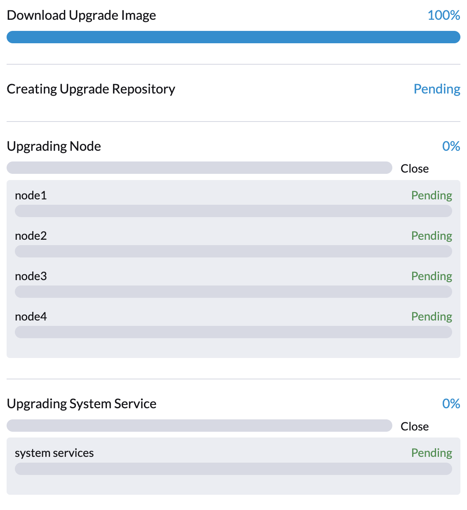
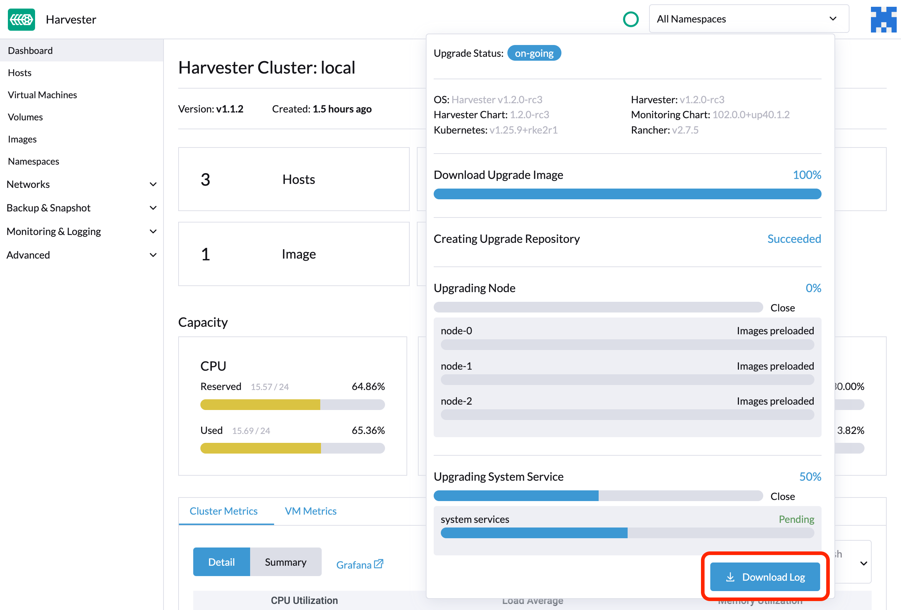

|
Este documento ha sido traducido utilizando tecnología de traducción automática. Si bien nos esforzamos por proporcionar traducciones precisas, no ofrecemos garantías sobre la integridad, precisión o confiabilidad del contenido traducido. En caso de discrepancia, la versión original en inglés prevalecerá y constituirá el texto autorizado. |
Solución de problemas
Descripción general
Aquí hay algunos consejos para solucionar un fallo en la actualización de versión:
-
Consulta las notas de actualización específicas de la versión. Puedes hacer clic en la versión en la tabla de la matriz de soporte para ver si hay problemas conocidos.
-
Profundiza en el propuesta de diseño de la actualización. La siguiente sección describe brevemente las fases dentro de una actualización de versión y los posibles métodos de diagnóstico.
Flujo de actualización de versión
El proceso de actualización de versión incluye varias fases.

Fase 1: Provisión de máquina virtual del repositorio de actualización de versión
El controlador SUSE Virtualization descarga un archivo ISO de lanzamiento y lo utiliza para aprovisionar una máquina virtual del repositorio de actualización de versión. El nombre de la máquina virtual utiliza el formato upgrade-repo-hvst-xxxx.

La velocidad de la red y la utilización de recursos del clúster influyen en el tiempo requerido para completar esta fase. Las actualizaciones de versión suelen fallar debido a problemas de velocidad de red.
Si la actualización de versión falla en este punto, comprueba el estado de la máquina virtual del repositorio y su pod correspondiente antes de reiniciar la actualización de versión. Puedes comprobar el estado utilizando el comando kubectl get vm -n harvester-system.
Ejemplo:
$ kubectl get vm -n harvester-system
NAME AGE STATUS READY
upgrade-repo-hvst-upgrade-9gmg2 101s Starting False
$ kubectl get pods -n harvester-system | grep upgrade-repo-hvst
virt-launcher-upgrade-repo-hvst-upgrade-9gmg2-4mnmq 1/1 Running 0 4m44sFase 2: Precargar imágenes de contenedor
El controlador SUSE Virtualization crea trabajos que descargan y precargan imágenes de contenedor desde la máquina virtual del repositorio. Estas imágenes son necesarias para el siguiente lanzamiento.
Permite algo de tiempo para que las imágenes se descarguen y precarguen en todos los nodos.

Si la actualización de versión falla en este punto, comprueba los registros de trabajo en el espacio de nombres cattle-system antes de reiniciar la actualización de versión. Puedes comprobar los registros utilizando el comando kubectl get jobs -n cattle-system | grep prepare.
Ejemplo:
$ kubectl get jobs -n cattle-system | grep prepare
apply-hvst-upgrade-9gmg2-prepare-on-node1-with-2bbea1599a-f0e86 0/1 47s 47s
apply-hvst-upgrade-9gmg2-prepare-on-node4-with-2bbea1599a-041e4 1/1 2m3s 2m50s
$ kubectl logs jobs/apply-hvst-upgrade-9gmg2-prepare-on-node1-with-2bbea1599a-f0e86 -n cattle-system
...Fase 3: Actualizar servicios del sistema
El controlador SUSE Virtualization crea una tarea que actualiza los gráficos de Helm de los componentes.

Puedes comprobar la tarea apply-manifest utilizando el comando $ kubectl get jobs -n harvester-system -l harvesterhci.io/upgradeComponent=manifest.
Ejemplo:
$ kubectl get jobs -n harvester-system -l harvesterhci.io/upgradeComponent=manifest
NAME COMPLETIONS DURATION AGE
hvst-upgrade-9gmg2-apply-manifests 0/1 46s 46s
$ kubectl logs jobs/hvst-upgrade-9gmg2-apply-manifests -n harvester-system
...|
Si la actualización de versión falla en este punto, debes generar un paquete de soporte antes de reiniciar la actualización de versión. El paquete de soporte contiene registros y manifiestos de recursos que pueden ayudar a identificar la causa del fallo. |
Fase 4: Actualizar nodos
El controlador SUSE Virtualization crea las siguientes tareas en cada nodo:
-
Clústeres de múltiples nodos:
-
Tarea
pre-drain: Migra en vivo o apaga máquinas virtuales en el nodo. Una vez completado, el servicio Rancher integrado actualiza el tiempo de ejecución RKE2 en el nodo. -
Tarea
post-drain: Actualiza y reinicia el sistema operativo.
-
-
Clústeres de un solo nodo:
-
Tarea
single-node-upgrade: Actualiza el sistema operativo y el tiempo de ejecución RKE2. El nombre de la tarea utiliza el formatohvst-upgrade-xxx-single-node-upgrade-<hostname>.
-

Puedes comprobar las tareas que se están ejecutando en cada nodo ejecutando el comando kubectl get jobs -n harvester-system -l harvesterhci.io/upgradeComponent=node.
Ejemplo:
$ kubectl get jobs -n harvester-system -l harvesterhci.io/upgradeComponent=node
NAME COMPLETIONS DURATION AGE
hvst-upgrade-9gmg2-post-drain-node1 1/1 118s 6m34s
hvst-upgrade-9gmg2-post-drain-node2 0/1 9s 9s
hvst-upgrade-9gmg2-pre-drain-node1 1/1 3s 8m14s
hvst-upgrade-9gmg2-pre-drain-node2 1/1 7s 85s
$ kubectl logs -n harvester-system jobs/hvst-upgrade-9gmg2-post-drain-node2
...|
Si la actualización de versión falla en este punto, no reinicies la actualización de versión a menos que lo indique Soporte de SUSE. |
Operaciones comunes
Reiniciar la actualización de versión
|
Si la actualización de versión en curso falla o se queda atascada en [Phase 4: Upgrade nodes], no reinicies la actualización de versión a menos que lo indique SUSE Support. |
-
Generar un paquete de soporte.
-
Haz clic en el botón Actualizar versión en la pantalla Panel de control.
Si has personalizado la versión, es posible que necesites crear el objeto de versión de nuevo.
Detener la actualización de versión en curso
|
Si una actualización de versión en curso falla o se queda atascada en [Phase 4: Upgrade nodes], identifica primero la causa. |
Puedes detener la actualización de versión realizando los siguientes pasos:
-
Inicia sesión en un nodo del plano de control.
-
Recupera una lista de
UpgradeCRs en el clúster.# become root $ sudo -i # list the on-going upgrade $ kubectl get upgrade.harvesterhci.io -n harvester-system -l harvesterhci.io/latestUpgrade=true NAME AGE hvst-upgrade-9gmg2 10m -
Elimina el CR
Upgrade.$ kubectl delete upgrade.harvesterhci.io/hvst-upgrade-9gmg2 -n harvester-system -
Reanuda los ManagedCharts en pausa.
Los ManagedCharts están en pausa para evitar una carrera de datos entre la actualización y otros procesos. Debes reanudar manualmente todos los ManagedCharts en pausa.
cat > resumeallcharts.sh << 'FOE' resume_all_charts() { local patchfile="/tmp/charttmp.yaml" cat >"$patchfile" << 'EOF' spec: paused: false EOF echo "the to-be-patched file" cat "$patchfile" local charts="harvester harvester-crd rancher-monitoring-crd rancher-logging-crd" for chart in $charts; do echo "unapuse managedchart $chart" kubectl patch managedcharts.management.cattle.io $chart -n fleet-local --patch-file "$patchfile" --type merge || echo "failed, check reason" done rm "$patchfile" } resume_all_charts FOE chmod +x ./resumeallcharts.sh ./resumeallcharts.sh
Descargar registros de actualización de versión
SUSE Virtualization recopila automáticamente todos los registros relacionados con la actualización de versión y muestra el procedimiento de actualización de versión. Por defecto, esta opción está habilitada. También puedes optar por no participar en este comportamiento.

Puedes hacer clic en el botón Descargar registro para descargar el archivo de registro durante una actualización de versión.

Las entradas de registro se recopilarán como archivos para cada Pod relacionado con la actualización de versión, incluso para Pods intermedios. El paquete de soporte proporciona una instantánea del estado actual del clúster, incluidos los registros y los manifiestos de recursos, mientras que el registro de actualización de versión conserva cualquier registro generado durante una actualización de versión. Al combinar estos dos, puedes investigar más a fondo los problemas durante las actualizaciones de versión.

Después de que finaliza la actualización de versión, SUSE Virtualization deja de recopilar los registros de actualización de versión para evitar ocupar espacio en disco. Además, puedes hacer clic en el botón Desécharlo para purgar los registros de actualización de versión.

|
La ampliación y el volumen de archivo de registro de Sin embargo, estos componentes continúan consumiendo recursos del clúster y pueden bloquear ciertas operaciones, como actualizar la configuración de la red de almacenamiento (ver problema #9599). Para liberar recursos y desbloquear operaciones, realiza cualquiera de las siguientes acciones:
|
Para más detalles, consulta el registro de actualización HEP.
|
El tamaño predeterminado del volumen que almacena los registros relacionados con la actualización es de 1 GB. Cuando ocurren errores, estos registros pueden consumir completamente el espacio disponible del volumen. Para solucionar este problema, puedes realizar los siguientes pasos:
|
Limpia las imágenes no utilizadas.
El valor por defecto de imageGCHighThresholdPercent en Configuración de Kubelet es 85. Cuando el uso del disco supera el 85%, el kubelet intenta eliminar imágenes no utilizadas.
Nuevas imágenes se cargan en cada nodo SUSE Virtualization durante las actualizaciones. Cuando el uso del disco supera el 85%, estas nuevas imágenes pueden ser marcadas para limpieza porque no son utilizadas por ningún contenedor. En entornos aislados, la eliminación de nuevas imágenes del clúster puede romper el proceso de actualización.
Si encuentras el mensaje de error Node xxx will reach xx.xx% storage space after loading new images. It’s higher than kubelet image garbage collection threshold 85%., ejecuta crictl rmi --prune para limpiar las imágenes no utilizadas antes de iniciar una nueva actualización.

Verifica el estado de una actualización atascada.
Si la actualización se queda atascada y la interfaz SUSE Virtualization no muestra ningún mensaje de error, realiza los siguientes pasos:
-
Verifica los pods que se crearon durante el proceso de actualización utilizando el comando
kubectl get pods -n harvester-system | grep upgrade.El script principal está en el pod
hvst-upgrade-xxxxx-apply-manifests-xxxxx. Si los registros de log incluyen los siguientes mensajes, el CRmanagedChartpodría estar causando problemas.Current version: x.x.x, Current state: WaitApplied, Current generation: x Sleep for 5 seconds to retry -
Recupera información sobre el CR
bundleutilizando el comandokubectl get bundles -A.Ejemplo:
NAMESPACE NAME BUNDLEDEPLOYMENTS-READY STATUS fleet-local fleet-agent-local 1/1 fleet-local local-managed-system-agent 1/1 fleet-local mcc-harvester 0/1 Modified(1) [Cluster fleet-local/local]; kubevirt.kubevirt.io harvester-system/kubevirt modified {"spec":{"configuration":{"vmStateStorageClass":"vmstate-persistence"}}} fleet-local mcc-harvester-crd 1/1 fleet-local mcc-local-managed-system-upgrade-controller 1/1 fleet-local mcc-rancher-logging-crd 1/1 fleet-local mcc-rancher-monitoring-crd 1/1